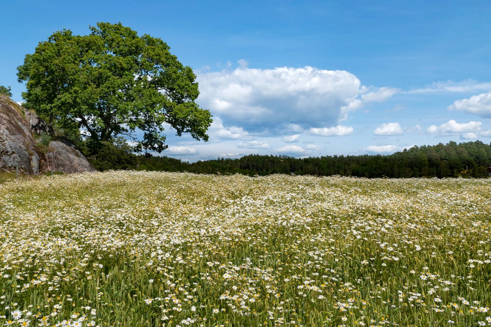

口コミ
スイーツ&パンの店 Cafe Myrtille
このページの口コミはイメージ例です。実際のお客様の声ではありません。お店の許可を得て、実際の声に差し替えることができます。
イメージ例Instagramの写真を見て、気になっているお店です。営業日を電話で確認してから伺う予定です。
イメージ例近くにスイーツとパンのお店があるようです。どんな商品があるのか、問い合わせてみようと思います。
イメージ例友人への手土産を探しています。取り扱いについて、お店に聞いてみたいと考えています。
